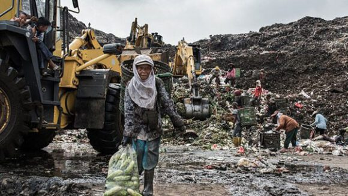
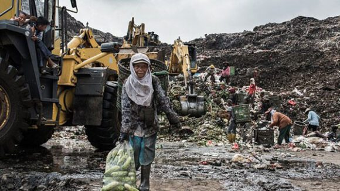

Sampah menjadi salah satu masalah yang cukup sulit diselesaikan di banyak daerah di Indonesia. Tidak hanya di kota-kota besar, ternyata kota kecil pun mengalami hal yang sama. Kota Jakarta, Depok dan Mataram adalah tiga kota di antara ratusan kota lain yang memiliki masalah dengan sampah yang berlebih. Setiap harinya kota Jakarta memproduksi 7.000 ton sampah yang tidak hanya berasal dari sampah rumah tangga, tetapi juga sampah perkantoran.
Berpindah ke kota dipinggiran Jakarta, menurut Tempo.com kota Depok menghasilkan 1.300 ton sampah perhari. Dengan jumlah sampah sebanyak itu, saat ini kota Depok kekurangan truk pengangkut sampah.
Tidak hanya itu, kota Depok juga mengalami permasalahan lain yaitu tempat pembuangan akhir yang sudah berlebihan sampah sehingga berpotensi longsor. Sedangkan di kota Mataram yang memproduksi sampah jauh lebih sedikit dibandingkan dengan kota Jakarta dan Depok, yaitu sebanyak 400-500 ton per-hari, sudah membuat dinas kebersihan cukup kesulitan dengan banyaknya sampah yang menumpuk di beberapa tempat. Jumlah sampah tersebut tentunya dapat berubah sewaktu-waktu, khususnya pada acara-acara besar seperti lebaran dan tahun baru.
 

Fakta Produksi Sampah di Hari Besar dan Acara
Setiap tahunnya volume sampah sering kali bertambah dengan cukup signifikan baik sebelum dan maupun sesudah perayaan Lebaran. Pada H-1 Lebaran tahun 2018, total sampah dari kota Jakarta yang dikirim ke tempat pembuangan sampah Bantar Gebang, yaitu sebanyak 7.781 ton.
Sedangkan di hari pertama lebaran jumlah ini turun ke angka 1.286 ton. Tidak hanya itu pada malam pergantian tahun baru 2018, Dinas Lingkungan Hidup DKI Jakarta juga telah mengumpulkan 780 ton sampah. Sedangkan di tahun 2019 juga terjadi pengurangan yang signifikan pada jumlah sampah yang terkumpul di acara malam tahun baru, yaitu sebanyak 237 ton sampah akibat masa yang lebih sedikit dari tahun sebelumnya.
Menurut www.cnnindonesia.com, penyumbang sampah terbanyak selama acara malam tahun baru berasal dari beberapa lokasi, yaitu kawasan Monas sebanyak 45 ton, Bundaran HI dengan 22 ton sampah, dan sepanjang Jalan Sudirman hingga M.H Thamrin sejumlah 26 ton sampah.

Meskipun terjadi penurunan jumlah produksi sampah selama lebaran dan acara malam pergantian tahun, tetapi tetap saja jumlah tersebut masih dikategorikan sangat banyak dan menjadi masalah yang cukup problematik untuk lingkungan. Apalagi sebagian besar sampah yang dihasilkan adalah sampah plastik sekali pakai yang nantinya tidak dapat didaur ulang. Sampah-sampah ini berasal dari sampah bekas tempat makanan dan minuman, kertas flyer, sisa spanduk, tisu, koran bekas, hingga jas hujan sekali pakai.
Karena hal tersebut, jelas jumlah sampah yang menumpuk di tempat pembuangan akhir akan semakin banyak dan tentunya akan merusak lingkungan. Sampah acara ternyata tidak hanya menjadi masalah di dalam negeri, tetapi juga di beberapa acara konser di luar negeri. Salah satu festival musik besar yang mengalami masalah penanganan sampah adalah festival musik Coachella.
Menurut data yang dipublikasikan oleh www.desertsun.com, pada tahun 2017 Coachella menghasilkan 107 ton sampah selama 15 hari festival dilangsungkan. Sedangkan hanya 20% dari jumlah sampah tersebut yang nantinya akan didaur ulang. Sampah yang berserakan di tempat acara sebagian besar sampah yang diproduksi berasal dari sampah botol plastik minuman. Kurangnya kesadaran dari pengunjung untuk membuang sampah pada tempat yang disediakan juga menjadikan salah satu permasalahan utama di festival musik ini.
Menariknya, pihak penyelenggara berusaha untuk meningkatkan inisiatif pengunjung untuk menjaga kebersihan dan mengurangi jumlah sampah dengan melakukan kegiatan yang sederhana tetapi menarik. Pengunjung dapat membawa 10 botol plastik bekas ke tempat pengumpulan sampah dan menukarkannya dengan tempat minum yang dapat digunakan kembali. Tidak hanya itu, pengunjung yang ikut membantu dalam mengumpulkan sampah juga akan diberikan suvenir seperti baju, tas, poster dan lain-lain.
Tidak hanya memberikan suvenir dan promo menarik kepada para pengunjung, akan lebih baik lagi jika ada kerjasama antara penyelenggara dan pengunjung untuk mengurangi jumlah sampah. Kerjasama tersebut dapat berupa himbauan dari pihak penyelenggara kepada pengunjung untuk membawa botol minum sendiri ke tempat acara dan membawa payung atau jas hujan yang dapat digunakan berkali-kali.
Selain itu penyelenggara acara juga dapat bekerjasama dengan para penjual makanan dan minuman untuk tidak menggunakan plastik sekali pakai, juga memberikan promo spesial untuk pengunjung yang membawa sendiri tempat makan dan botol mereka. Dengan adanya kesadaran diri yang tinggi akan bahaya sampah pada lingkungan, maka akan sangat mungkin untuk mengurangi jumlah sampah yang menumpuk di tempat pembuangan akhir.
Dengan cara-cara tersebut, maka program Zero Waste To Landfill (ZWTL) juga pastinya akan berjalan dengan sukses. Lantas, apa yang harus dilakukan jika himbauan untuk mengurangi pengunakan plastik sekali pakai dan memberikan promo kepada pengunjung belum juga efektif dalam menangani permasalahan sampah yang ada di tempat acara?
Penyelenggara acara dapat bekerjasama dengan perusahaan yang bergerak dibidang jasa pengolahan sampah untuk membantu mengedukasi pengunjung dan tentunya mengolah sampah yang menumpuk di tempat acara. Waste4Change sebagai kewirausahaan sosial yang bergerak di bidang pengelolaan sampah, menawarkan layanan yang dikenal dengan jasa pengelolaan sampah acara atau event waste management (EWM).
Program ini membantu acara-acara yang anda buat memiliki perencanaan yang baik dan matang dalam proses pengelolaan sampahnya, sehingga tidak ada lagi sampah yang menimbun di seluruh lokasi acara dan nantinya sampah akan dipilah lebih detail oleh Waste4Change. Tidak hanya fokus kepada pengolahan sampah yang bertanggungjawab, nantinya juga akan disediakan booth edukasi mengenai pemilahan sampah untuk untuk para pengunjung.
Pengelolaan Sampah Acara dari Waste4Change
Salah satu client dari Event Waste Management kami adalah Jakarta Fashion Week 2019. Acara yang berlangsung selama Oktober 2018 di Senayan City Jakarta, dikenal sebagai pekan mode tahunan terbesar di Asia Tenggara. Wardah bekerjasama dengan Jakarta Fashion Week dan Waste4Change, mengadakan program inspiring movement untuk meningkatkan kesadaran publik dalam pengelolaan sampah yang bertanggungjawab.
Selama acara kami menyediakan beberapa program berupa penuansaan less waste event, menyediakan education booth dan edukator bijak sampah, mengadakan talkshow terkait bijak kelola sampah, dan melakukan pengelolaan sampah yang bertanggungjawab dan sampah diangkut secara terpilah. Tidak hanya itu, kami juga menyediakan dropping box khusus untuk kemasan Wardah bekas pakai di lokasi acara. Dropping box ini bertujuan untuk mendukung kerjasama antara Wardah dan konsumennya dalam mendorong gaya hidup hijau dan berperan serta dalam pengelolaan sampah yang bijak.

Selain Jakarta Fashion Week 2019, acara Milo Jakarta International 10k yang berlangsung pada Juli 2018 juga telah bekerja sama dengan Waste4Change untuk pengelolahan sampah acara mereka. Semua sampah yang ada di Milo Jakarta International 10k telah dikelola dengan cara yang bertanggungjawab selama acara berlangsung. Tidak hanya itu sampah-sampah yang terkumpul juga didaur ulang secara optimal dengan mengimplementasikan konsep Zero-Waste to Landfill (ZWTL), sehingga tidak ada sampah yang berakhir di tempat pembuangan akhir. Untuk mendunkung proses daur ulang yang optimal, maka diperlukan juga edukasi pentingnya pengelolahan sampah yang bertanggungjawab. Selama acara berlangsung, Waste4Change menyediakan tempat sampah yang terpilah di beberapa lokasi acara dan mengajak para pengunjung untuk ikut melakukan proses pemilahan sampah. Kami juga bekerjasama dengan Car Free Day Ades 2019 yang dilaksanakan pada bulan April 2019 dan PRAISE di tahun 2017. Membutuhkan jasa pengangkutan sampah yang bertanggung jawab dan terpilah? Anda bisa menggunakan jasa dari Waste4Change. Selain pengangkutan sampah untuk yang terfokus pada sampah acara, Waste4Change juga melayani pengangkutan sampah untuk perusahaan/restaurant/bisnis/gedung (commercial waste collect) dan juga pengangkutan sampah perumahan (residential waste collect).